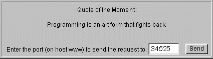

Feedback Form
|
|
Start of Tutorial > Start of Trail > Start of Lesson |
Search
Feedback Form |
The Writing a Datagram Client and Serversection of the Custom Networking and Security trail contains example code for two applications, a client and a server. This section rewrites the client to be an applet. Here's the
applet source code. (Here's the corresponding
1.0 source code<APPLET CODE=QuoteClientApplet.class WIDTH=500 HEIGHT=100> </APPLET>Here's a link to a page that contains the above HTML code. By saving this page to a file on your local HTTP server, you can use it to communicate with the server-side application that will be running on the HTTP server. You must also save the compiled form of the applet to the same directory.
Before the applet can get quotes, you need to run the server on the host that the applet came from. You then need to note the number of the port that the server is listening on. After you enter this port number into the applet, it will hook up with the server and you'll be able to get one-line quotations. Below are detailed instructions, followed by pictures of the server and the applet in action.
Here's a picture of the applet in action:
- Compile
QuoteServer.javaQuoteServerThread.java- On the computer that serves the applet class file (through HTTP), invoke the interpreter on the
QuoteServerclass. For example, if you view the applet's page with the URL http://mymachine/quoteApplet.html, then you need to run the server on the host named mymachine.- Record the port number that the quote server displays.
- Enter this number into the applet's text field.
- Press the Send button to request a quote from the server. You should see a quote appear in the text area.

|
|
Start of Tutorial > Start of Trail > Start of Lesson |
Search
Feedback Form |